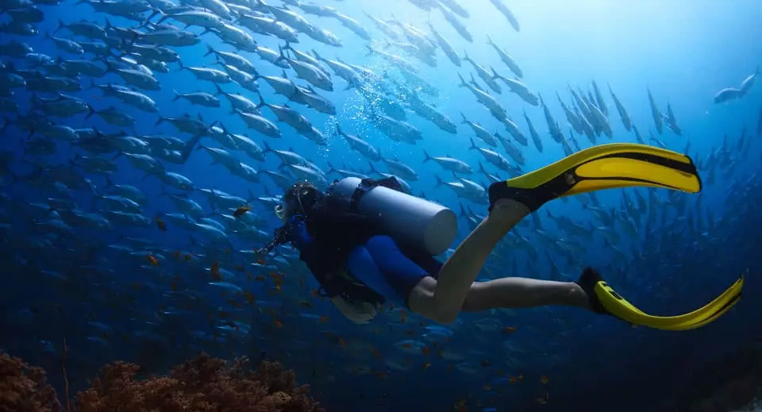

The tropical waters around Medjumbe Island are one of Mozambique’s best-kept secrets. Here, in clear waters that reach more than 30°C in summer and rarely less than 25°C in winter, you will discover a marine ecosystem that is absolutely pristine. Humpback Whales also frequent the island waters between August and October.
The pristine marine environment offers fantastic Snorkelling with untouched coral reefs in crystal clear, warm waters. A perfect vista of endless white sand and translucent sea mesmerizes all who visit Anantara Medjumbe Island Resort & Spa.
The Quirimbas Archipelago offers some of the most spectacular fishing in the world. Unspoilt and largely unexplored, the Indian Ocean here with its deep Mozambique Channel harbours some of the most exciting game fish to catch – species such as Kingfish, Queenfish, Barracuda, Dorado, Sierra, Wahoo, Sailfish and Yellowfin Tuna.
Around the Quirimbas, deep water is accessed close to the islands, which means guests do not have to travel far for possible thrilling encounters with big game fish. The island’s fishing boat, N’Jovo is a Gulf Craft 31’ Dolphin Super Deluxe, which has been especially adapted with an extended T-Top to shield guests from the tropical sun.